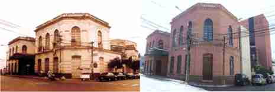

Construida en el año 1843 esta gran casona inicialmente albergaba la sala de sesiones del Congreso Nacional, en ese entonces el acceso principal se encontraba sobre la Avenida El Paraguayo Independiente.
Las sesiones luego se trasladan al edificio del Cabildo, entonces, el presidente Carlos Antonio López, solicita al dramaturgo Ildefonso Antonio Bermejo, la apertura de un teatro. El mismo, elaboró un proyecto y construyó el edificio, que, una vez culminado sería sede del teatro en 1855. Desde entonces, fue el centro de la cultura en términos de teatro y música para los asuncenos.
Durante la Guerra contra la Triple Alianza, el teatro siguió funcionando en las medidas de sus posibilidades. En el año 1886, las autoridades municipales, aceptaron la propuesta del Sr. Baudilio Alló, empresario de origen catalán, quien obtuvo la concesión del teatro y la plaza Libertad para levantar allí un nuevo edificio, se inició así la construcción del Teatro Nacional que culminando en el año 1889.
En 1894, la obra de Alló, que fuera la prolongación de la obra de Ildefonso A. Bermejo, quedaba en manos de la sociedad, se introdujeron palcos y hermosearon los patios. En el año 1939, pasó a ser dominio de la municipalidad de Asunción y se convirtió en Teatro Municipal.
Durante la primera mitad del siglo XX no existió en Asunción un edificio destinado a la cultura con las glorias del Teatro Municipal. Entre los años 1940 y 1960, el escenario del Teatro Municipal, reunió a la mayoría de las representaciones teatrales en el Paraguay. Era ya conocido como Teatro Ignacio A. Pane. En el año 1995 fue cerrado para reparaciones y restauraciones, que se iniciaron en el año 1997. Los Trabajos prosiguieron hasta completar las obras en su totalidad, y de esa manera en el año 2006, el teatro "Ignacio A. Pane" quedó oficialmente habilitado para su uso y recobraba el brillo de sus antiguas glorias con un remozamiento edilicio que hoy es orgullo de la ciudad y con programaciones que agrada al público en general.
Si bien el edificio mantuvo sus características esenciales, se observa la complementación de la antigua construcción con las nuevas ampliaciones que comprende el edificio que da sobre la Avenida El Paraguayo Independiente esquina Nuestra Señora de la Asunción.
Gracias a que Asunción tiene su teatro abierto, artistas y músicos en gira, llegan y contribuyen notablemente a la formación del gusto del exigente público paraguayo. El teatro Municipal siempre ha estado en la memoria del paraguayo/ a, por las manifestaciones artísticas y políticas.